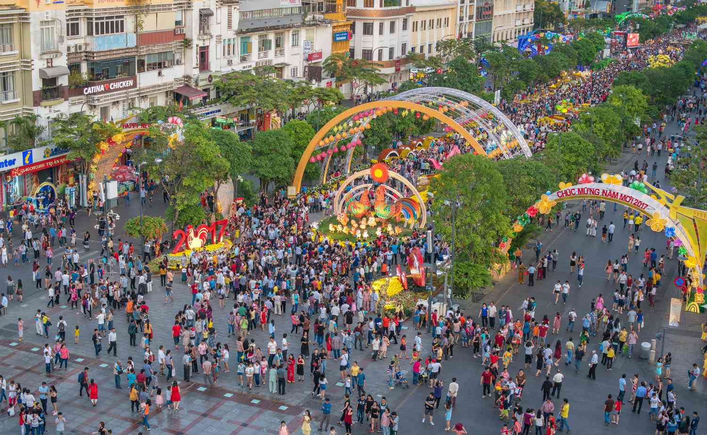

Celebrated in late January or early February, Tết is what Vietnamese people celebrate as their Lunar New Year. Out of any holiday in Vietnam, this is the biggest one. The main focus is family reunions, honoring past ancestors, and wishing for a good year ahead.
Activities During Tết
-
Reunite with family and friends along with honoring ancestors
This is the most important activity during Tết. Family is a very important part of Vietnamese culture, and this is a time when families come together to celebrate and honor their ancestors.
-
Give luck money (lì xì) to children
This is a way to show love and care for children, and to bring them good luck in the new year. Money is given in small red envelops and are given to children by their elders.
-
Clean the house and decorate it for the new year
This is a way to start the new year with a clean slate and to welcome good fortune. The house is thoroughly cleaned, and then decorated with flowers, plants, and other festive items.
-
Make traditional foods like bánh chưng
These are traditional Vietnamese dishes that are made during Tết. They are often shared with family and friends as a way to celebrate the new year. Bánh Chưng is a steamed rice cake that is filled with mung beans, seasoned pork, and other ingredients wrapped in banana leaves.
-
Watch traditional performances and games
Enjoy tranditional lion dances and othe culturual performances along with tranditional games such as xèng (a type of traditional game) and other fun activities (money might be involved...)
Tips for Celebrating Tết
- Wear new clothes to symbolize a fresh start
- Give lucky money (lì xì) to children
- Respect and honor your elders during the celebrations
- Prepare traditional foods and dishes to share with family and friends
- DON'T clean the house on the first day of the new year
Testimonial
"My first lesson was to learn how to say “Happy New Year” in Vietnamese: Chúc mừng năm mới! Over the next four days, I followed my friends in making offerings of food and incense at family graves and shrines. We prayed and had our fortunes told at the local Buddhist pagoda. On the morning of the new year, we gave “lucky money” in red envelopes to children."
- East West News Service